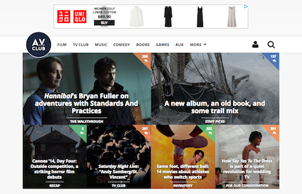
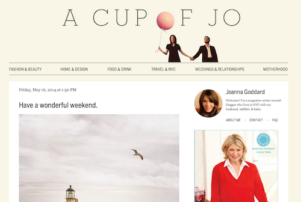
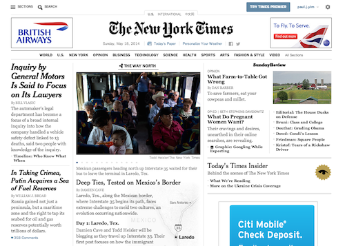

Sunday, May 18, 2014
The A.V. Club

The A.V. Club is one of my favorite sites for film reviews and TV show recaps. While I enjoy the writing style and the topics they cover, I have to admit that the site is not very user-friendly. The sheer number of images, videos and links on the homepage can be overwhelming on your first visit. The links provided at the top of the page give you a rough outline of how the site is organized (Film, TV Club, Music, etc.). However, I generally prefer using the search bar to navigate the site instead of following the links.
Taking a step back, I see that the site has a very simple design. The header (excluding the ads) and footer are uncluttered and easy to read. If it wasn't for the images and videos, it would actually look pretty bare. Since The A.V. Club covers movie, TV and music news, it clearly makes sense to incorporate images and videos. Taking that into consideration, I think the layout is fine for the content, but it would look significantly better if they cut down the quantity of images and videos.
A Cup of Jo

A Cup of Jo is one of my favorite lifestyle blogs and I was immediately attracted to the website because of the simple design. The layout is clean and organized, leaving a lot of white space between text and images. Each blog post is supplemented with an image and I think they do a great job of choosing images that won't distract from the writing. It is very easy to navigate the site using the links at the top of the page and it's easy to understand how the site is structured.
I also appreciate that there are very few ads on the website. I find that a lot of blogs these days are cluttered with ads that distract from the content. On A Cup of Jo, the ads are generally located in the sidebar, along with links to popular posts and social media, a search window, and information about the blogger. Much of what you would want to know about the website is found on the homepage, which makes it easier for the reader to find what he/she needs.
The New York Times

Out of the three websites I selected, I believe The New York Times has the best layout and usability. Since it's a news site, the amount of information can be staggering, but they do a great job of making it easy to find articles that would interest you. On the homepage, the top section is devoted to top stories of the day, while the bottom section provides a snapshot of new articles for each section: World, Technology, Sports, Arts, etc. This allows you to find articles that interest you without even leaving the homepage. Whenever I visit the site, I can usually find several articles that interest me within a couple minutes.
There is a lot of text on the homepage, but they do a great job of spacing it out and clearing demarcating the articles. The article titles are plainly distinguishable from the other text, which allows you to easily scan the top headlines. Essentially, the site looks like the front page of a newspaper, which makes it familiar to the reader. That goes a long way in making it easy to navigate the site.